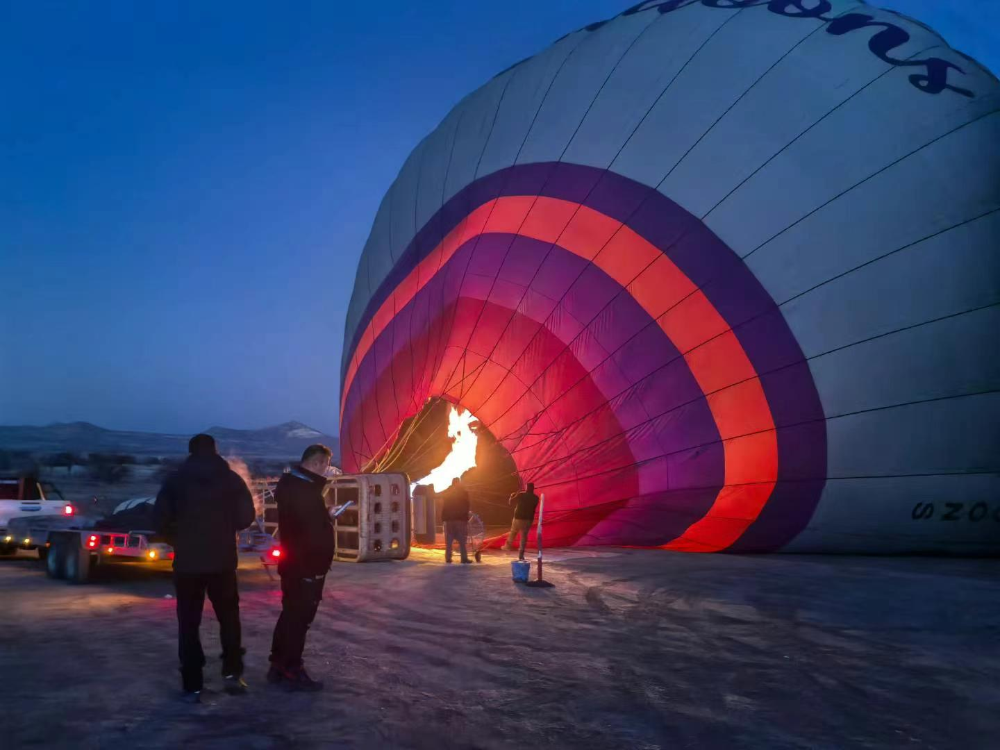

Cristina (Yingmeng) Zhang
This website is a personal memory space. It collects small moments from my travel in Turkey.
This image is a fragment from my trip. Click the image to return to the related page.


Some memories feel heavy and some feel light.
This website does not try to explain everything. It holds fragments instead of full stories ：）